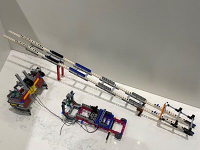

When designing our base robot, we establish criteria at the outset, such as desired footprint, height, balance, drive train, sensors to be used, user interface, etc. to arrive at a working prototype. We also strive to design and build a base robot which is robust and which features a frame around the chassis to provide structural rigidity as well as means to square up against walls and mission models. We design attachments keeping in mind that these attachments need to be easy to install and remove, robust, and both passive and multi-purpose whenever possible. From testing the prototype base robot and the attachments, we make revisions to our work in order to combine and speed up missions and increase repeatability to achieve maximum efficiency, through completion time and size. By the end of the season, our attachments will often be in their fifth or sixth iteration.
Our robot is very robust and compact with a frame for strength and an easier way to drop on attachments. We use four light sensors, with shielding from ambient light. Our robot has two small trailing wheels at the back of the frame, which are steering neutral, and small sized wheels with a small diameter. These small wheels allow for more accurate movements as they decrease the error associated with the drive motor rotation sensors. However, we sacrifice some speed due to our wheels having a small diameter. Our robot also has three guide wheels, on the sides of the robot to follow the wall.

We have found that the move functions provided by the EV3 suite are unreliable. Although they have a built in PID feature, they still do not move the robot in a straight line. To test this, we set a designated starting spot for the robot and then we ran it until it hit the wall on the other side of the table. We repeated this dozens of times and found that each time it would end up in a different spot on the other side of the table. Each time it would be up to an inch away from the previous run. Then, we made our own error-corrected movement function (which you can read about in the programming section of this website). We conducted the same experiment using our block and found that there was much less error and the robot would consistently end up in the same position on the table.
| Name of Attachment | Description | Picture |
|---|---|---|
| "Z" Cargo Plane Arm | This attachment, which lowers the Cargo Plane door, consists of a long arm and a series of gears that engages with the medium "D" motor in the rear of the robot. For ease of installation, the attachment rests in the robot's bay and the Technic knob gear on the attachment easily engages with the motor. Using bevel gears to change the angular direction of movement of the upward-pointing motor, allows the long arm to swing from side to side to hit the large airplane cargo door handle to release the cargo onto the mat. After the cargo has been deposited onto the mat, the modified L-shaped liftarms at the end of arm are used to reposition the cargo into the black scoring circle. | |
| Ejector | This attachment ejects the food package and our innovation solution model into the CARGO CONNECT circle. It has axles instead of pins to attach to the robot's frame. The attachment is connected to the medium "D" motor at the rear of the robot that is attached to knob gear attached to an axle which rotates a large spur gear. Then another axle is connected, using a pin connector and a pin with no friction ridges to the furthest most outer rim of the large spur gear. | |
| The Little Arm | This attachment is used to flip the Switch Engine. It is attached to the "A" medium motor at the front of the robot. | |
| Stick One | This attachment is used to pull out the vehicles of the Transportation Journey mission and push the crane in the Unload Cargo Ship mission. This attachment is attached to the medium "A" motor at the front of the robot. | |
| Stick Two | This attachment is used to lower train tracks and push the train to its destination, brings one platooning truck to the bridge, lowers both sides of the bridge, and pushes just the yellow panel in Accident Avoidance. |  |
| The BIG Burj | This attachment pushes 1 cargo container to the circle containing the chicken and a platooning truck with 2 cargo containers. The robot places the wind turbine onto the Large Delivery blue holder. Then the robot uses the D motor to lower the Big Burj attachment, to place the parcel on the Home Delivery front door. |  |